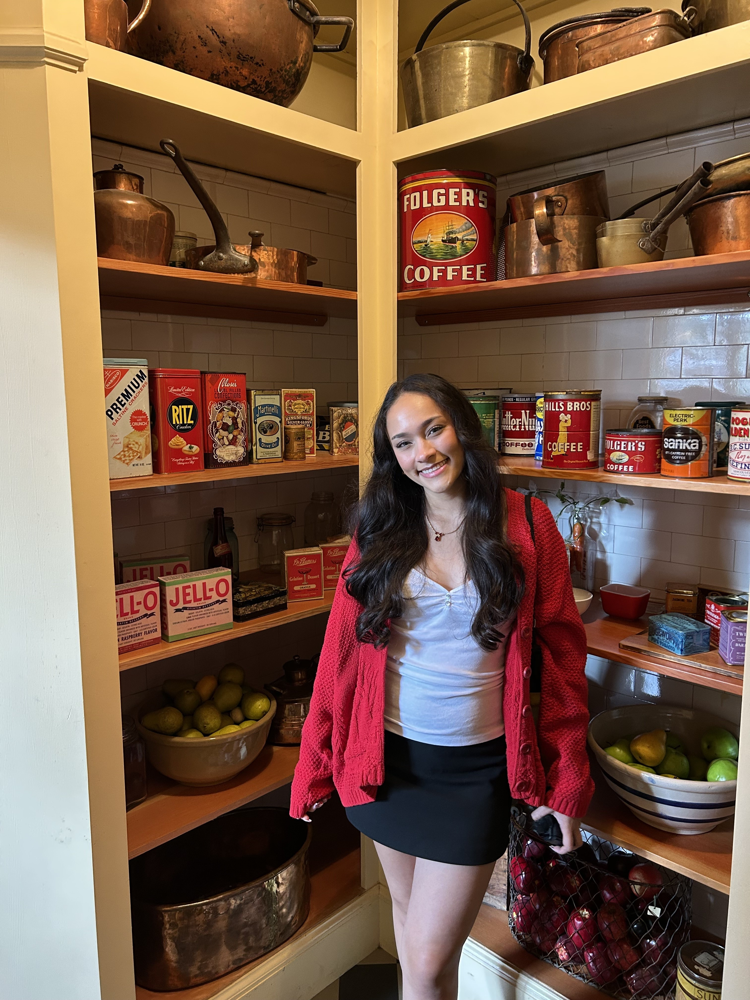
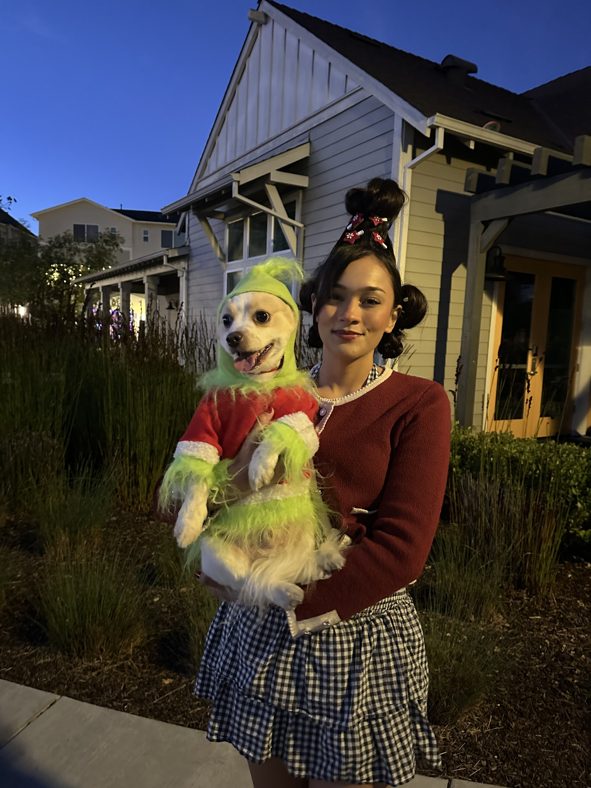

01
How it started
Before I knew what design was, I was already analyzing what made everyday things intuitive or frustrating. That curiosity never left.
Nice to meet you
I'm a Bay Area based designer from Newark, California, driven by curiosity about how people interact with the world around them.
What draws me to design isn't just aesthetics — it's understanding what makes things work. Before I even knew what graphic design was, I found myself analyzing the small details in everyday objects, trying to figure out what made them intuitive or frustrating.
Now I get to channel that curiosity into creative problem-solving. Whether I'm talking with users, iterating on concepts, or refining visual details, I love uncovering the insights that lead to better solutions.

Researcher who designs. Designer who listens.
01
Before I knew what design was, I was already analyzing what made everyday things intuitive or frustrating. That curiosity never left.
02
As President of ASU's Programming and Activities Board, I learned that impactful design starts with understanding people's needs. I lead with care and plan with purpose.
03
Now I channel that curiosity into creative problem-solving. I'm fascinated by the research and psychology behind every effective design choice.
What I bring
I start by asking why before jumping to how. Research shapes every decision I make.
I design for people who are often overlooked, not just the assumed default user.
I think in components, patterns, and relationships, not just individual screens.
Outside of work

Weightlifting
Building strength and discipline outside the studio
Hiking
Finding clarity in nature and open space
BamBam
My dog who reminds me to slow down
I'm currently open to full-time opportunities where I can grow.
Get in touch →